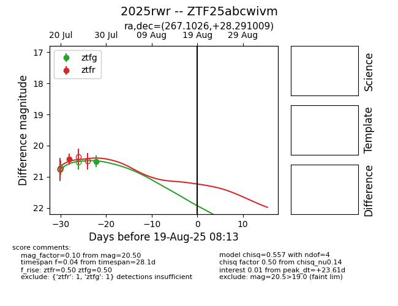

Target 2025rwr at 2025-08-19 09:59, see:
FINK: fink-portal.org/ZTF25abcwivm
Lasair: lasair-ztf.lsst.ac.uk/objects/ZTF25abcwivm
ALeRCE: alerce.online/object/ZTF25abcwivm
TNS: wis-tns.org/object/2025rwr
YSE: ziggy.ucolick.org/yse/transient_detail/2025rwr
alt names
ZTF25abcwivm (ztf,fink)
2025rwr (tns,yse)
coordinates:
equatorial (ra, dec) = (267.1026,+28.29101)
galactic (l, b) = (53.1897,+25.39944)
photometry
last ztfg=20.50, ztfr=20.44
1 ztfg, 1 ztfr detections
